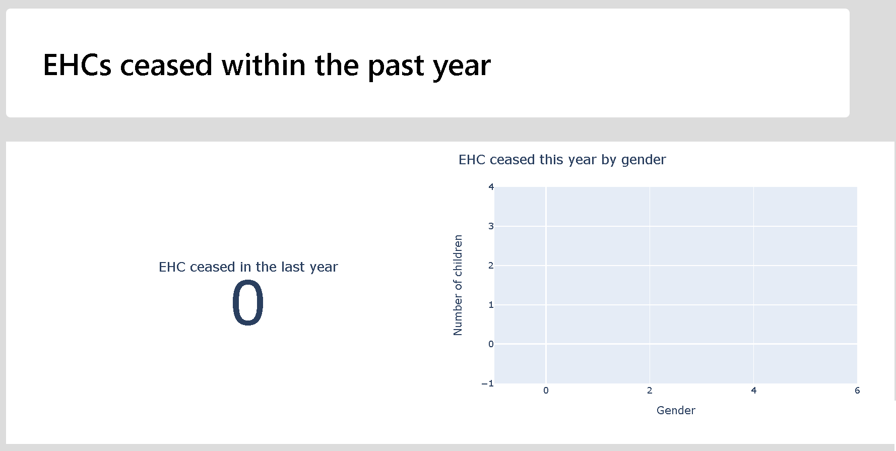
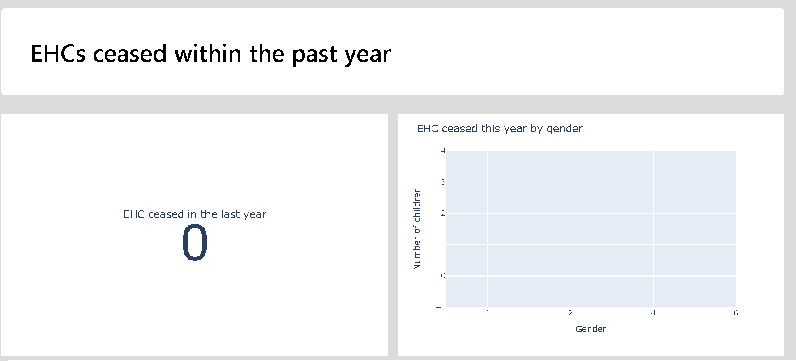

This tool uses the five modules of the SEN2 dataset. The column names in each module must be capitalised, spelled, and formatted correctly as they are used to identify each module within the code. Further details can be seen in the explandable box below.
The tool currently only accepts CSV data. Each module must be loaded in a seprate CSV with headers in the first row, and no empty rows/columns before headers or data.
We are working on XLSX support but at the moment this is not a feature.
To use the tool drag and drop your five CSVs into the upload box on the main page and click submit. The tool may take a couple of minutes to process the data and display visualisations.
There are two ways to use the tool to make a report. The first is to use the tool in browser, picking visualisations as needed for your own reporting needs. Simply hover over each plot and use the save icon to save the plot and then bring it into your report. The second is to use the "Save as PDF" which appears after generating the report. This option takes a little time as generating PDFs is rather intensive computationally, so give it a few minutes. You may have to tell your browser to keep waiting for the page to respond a couple of times too. NOTE: because of how PDFs render, when using a particularly small screen the report formatting might be a little off when using the 'Save to PDF' button. If this is the case, simply zoom out your screen a little (this can be done in most browsers using ctrl + the minus key) and re-generate the report. You'll know if this has happened if the plot sides don't line up nicely with the title cards.
Incorrect zoom with small screen  Correct zoom with small screen Box plots are a useful way to visualise distributions of values. In box plots the upper and lower bounds of the box represent upper and lower quartiles, and the median is given by the line inside the box. The lines outside the box are the highest and lowest values not considered to be statistical outliers. Points displayed outside of these lines are statistical outliers. See more on the box plots used here.
The journeys chart shows the breakdown of children from assessment request to outcome. The sections of the chart reflect the column names in the modules, and the value given at each section is the value in the column it represents. For instance in request outcome, the Y section is children who have made a request for an assessment and have been granted an assessment. Each of these column sections shows the distribution of children with each outcome. From the left to the right, to each column section, you can see the bars between them showing how many children move from outcome to outcome. Each of these is sized according to the number of children who take a given journey of outcomes. As an illustration lets say that 75 children might have a Y for their request outcome, but only 40 of these have a completed assessment, and then only 30 of those have an EHCP. In this case, from the Request section bar of 30 would go across to Request Outcome "Y", Assessment Complete "Assessment Completed", and Assessment Outcome to Issue EHCP "Y". Its size then is all of the childrne who take a particular journey. That set of 75 children with a Request Outcome "Y" may be split into smaller bars including those who have not got a completed assessment but dont have an ECHP, and another bar of those hwo have not got a completed assessment and then cannot have an assessment outcome.
As the tool is still in development, if you have any unflagged errors, or the tools seems to be taking multiple minutes to run, the developer console it a good place to start looking.
A guide on how to access the developer console in multiple different browsers can be seen: here.